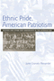
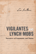

Browse
other Author lists:
A B C
D E F
G H I
J K L
M N O
P Q R
S T U
V W X
Y Z |
 |
Tomboys
A Literary and Cultural History
Abate, Michelle Ann
338 pp • 6x9 • Spring 2008
paper 978-1-59213-723-7
cloth 978-1-59213-722-0
|
 |
African
Intellectual Heritage
A Book of Sources
edited
by Asante, Molefi Kete and Abu S. Abarry
848 pp • 7x10 • Fall 1995
paper 978-1-56639-403-1
cloth 978-1-56639-402-4 |
 |
Who
Cares for the Elderly?
Public Policy and the Experiences of Adult Daughters
Abel,
Emily K.
248 pp • 6x9 • Spring 1991
paper 978-0-87722-950-6
cloth 978-0-87722-814-1
|
|
Lawless
Mind
Abelson,
Raziel
209 pp • 5x8 • Fall 1988
cloth 978-0-87722-579-9
|
 |
The
Atlas of Pennsylvania
edited
by Cuff, David J., William J. Young, Edward K. Muller, Wilbur
Zelinsky and Ronald F. Abler
304 pp • 13.25x15.5 • Fall 1989
cloth 978-0-87722-618-5 |
 |
The
Money Pitch
Baseball Free Agency and Salary Arbitration
Abrams,
Roger I.
240 pp • 6x9 • Spring 2000
cloth 978-1-56639-774-2
|
 |
Legal
Bases
Baseball and the Law
Abrams,
Roger I.
240 pp • 6x9 • Spring 1998
paper 978-1-56639-890-9
cloth 978-1-56639-599-1
|
|
Doing
Comparable Worth
Gender, Class, and Pay Equity
Acker,
Joan
272 pp • 6x9 • Fall 1989
paper 978-0-87722-834-9
cloth 978-0-87722-621-5 |
 |
Women
in the Latin American Development Process
edited
by Bose, Christine E. and Edna Acosta-Belén
304 pp • 6x9 • Spring 1995
paper 978-1-56639-293-8
cloth 978-1-56639-292-1
|
 |
Reclaiming
Class
Women, Poverty, and the Promise of Higher Education in America
edited
by Adair, Vivyan C. and Sandra L. Dahlberg
280 pp • 6x9 • Spring 2003
paper 978-1-59213-022-1
cloth 978-1-59213-021-4
|
 |
The
Global Emergence of Gay and Lesbian Politics
National Imprints of a Worldwide Movement
edited
by Adam, Barry D, Jan Willem Duyvendak and André Krouwel
448 pp • 6x9 • Fall 1998
paper 978-1-56639-645-5
cloth 978-1-56639-644-8
|
 |
Time
and Social Theory
Adam,
Barbara
250 pp • Fall 1990
cloth 978-0-87722-788-5
|
|
Imagined Liberation
Xenophobia, Citizenship, and Identity in South Africa, Germany, and Canada
Adam, Heribert and Kogila Moodley
246 pp • 6x9 • Spring 2015
paper 978-1-4399-1190-7
cloth 978-1-4399-1189-1
|
 |
Seeking
Mandela
Peacemaking Between Israelis and Palestinians
Adam,
Heribert and Kogila Moodley
248 pp • 6x9 • Spring 2005
paper 978-1-59213-396-3
cloth 978-1-59213-395-6
|
 |
Acres
of Diamonds
Conwell,
Russell H., foreword by Russell F. Weigley, introduction by
David Adamany
96 pp • 5x7 • Spring 2002
cloth 978-1-56639-962-3
|

|
Citizen
Lobbyists
Local Efforts to Influence Public Policy
Adams, Brian
248 pp • 5.5x8.25 • Fall 2006
paper 978-1-59213-570-7
cloth 978-1-59213-569-1
|
 |
Philadelphia
Neighborhoods, Division, and Conflict in a Post-Industrial City
Adams,
Carolyn, David Bartelt, David Elesh, Ira Goldstein, Nancy Kleniewski
and William Yancey
224 pp • 6x9 • Fall 1991
paper 978-1-56639-078-1
cloth 978-0-87722-842-4
|
 |
Restructuring the Philadelphia Region
Metropolitan Divisions and Inequality
Adams, Carolyn, David W. Bartelt, David Elesh and Ira Goldstein with Michelle Schmitt and Joshua Freely
248 pp • 6x9 • Fall 2008
paper 978-1-59213-897-5
cloth 978-1-59213-896-8
|
 |
The
Metaphysics of Self and World
Toward a Humanistic Philosophy
Adams,
E. M.
325 pp • 6x9 • Spring 1991
cloth 978-0-87722-784-7 |
 |
Religion
and Cultural Freedom
Adams,
E. M.
208 pp • 6x9 • Fall 1993
cloth 978-1-56639-051-4
|

|
Essays on Twentieth-Century History
Edited by Adas, Michael for the American Historical Association
350 pp • 6x9 • Spring 2010
paper 978-1-4399-0270-7
cloth 978-1-4399-0269-1
|
 |
Islamic
and European Expansion
The Forging of a Global Order
edited
by Adas, Michael
400 pp • 6x9 • Fall 1993
paper 978-1-56639-068-2
cloth 978-1-56639-067-5
|
|
Agricultural
and Pastoral Societies in Ancient and Classical History
edited
by Adas, Michael
376 pp • 7x10 • Fall 2000
paper 978-1-56639-832-9
cloth 978-1-56639-831-2 |
 |
Impure
Thoughts
Essays on Philosophy, Feminism, and Ethics
Addelson,
Kathryn Pyne
257 pp • 5.5x8.25 • Fall 1990
paper 978-0-87722-960-5
cloth 978-0-87722-753-3 |
 |
Natural
Signs
A Theory of Intentionality
Addis,
Laird
199 pp • 6x9 • Fall 1989
cloth 978-0-87722-631-4
|
|
Upon the Ruins of Liberty
Slavery, the President's House at Independence National Historical Park, and Public Memory
Aden, Roger C.
264 pp • 6x9 • Spring 2017
paper 978-1-4399-1200-3
cloth 978-1-43991-199-0
|
 |
The
Urgings of Conscience
A Theory of Punishment
Adler,
Jacob
316 pp • 6x9 • Fall 1991
cloth 978-0-87722-826-4
|
|
Men
Who Sell Sex
International Perspectives on Male Prostitution and AIDS
edited
by Aggleton, Peter
296 pp • 6x9 • Fall 1998
paper 978-1-56639-669-1
cloth 978-1-56639-668-4
|
|
Berlusconi's Italy
Mapping Contemporary Italian Politics
Shin, Michael E. and John A. Agnew
184 pp • 5.5x8.25 • Spring 2008
paper 978-1-59213-717-6
cloth 978-1-59213-716-9
|
 |
Hegemony
The New Shape of Global Power
Agnew,
John
296 pp • 6x9 • Spring 2005
paper 978-1-59213-153-2
cloth 978-1-59213-152-5
|
 |
Marxism
in Latin America
edited
by Aguilar, Luis E.
412 pp • 4x7 • Spring 1978
paper 978-0-87722-108-1
cloth 978-0-87722-106-7
|
 |
The
Beat of My Drum
An Autobiography
Olatunji,
Babatunde with Robert Atkinson and Akinsola Akiwowo, foreword
by Joan Baez, introduction by Eric Charry
272 pp • 6x9 • Spring 2005
paper 978-1-59213-354-3
cloth 978-1-59213-353-6
|
 |
Myths
about the Powerless
Contesting Social Inequalities
edited
by Lykes, M. Brinton, Ali Banuazizi, Ramsay Liem and Michael
Morris, foreword by George W. Albee
416 pp • 6x9 • Spring 1996
paper 978-1-56639-422-2
cloth 978-1-56639-421-5
|
 |
Sportista
Female Fandom in the United States
Markovits, Andrei S., and Emily Albertson
268 pp • 6x9 • Fall 2012
paper 978-1-4399-0964-5
cloth 978-1-4399-0963-8
|
|
200 Years of Latino History in Philadelphia
Al Día, The Staff of
200 pp • 8.5x11 • Fall 2012
cloth 978-0-578-10660-1 |
|
Law
and the Environment
A Multidisciplinary Reader
edited
by Percival, Robert V. and Dorothy C. Alevizatos
464 pp • 7x10 • Spring 1997
paper 978-1-56639-524-3
cloth 978-1-56639-523-6
|
|  |
Ethnic
Pride, American Patriotism
Slovaks and Other New Immigrants in the Interwar Era
Alexander,
June Granatir
296 pp • 6x9 • Spring 2004
paper 978-1-59213-252-2
cloth 978-1-59213-251-5
|

|
From Slave Ship to Supermax
Mass Incarceration, Prisoner Abuse, and the New Neo-Slave Novel
Alexander, Patrick Elliot
266 pp • 6x9 • Fall 2017
paper 978-1-4399-1415-1
cloth 978-1-4399-1414-4 |
 |
Cat
Culture
The Social World of a Cat Shelter
Alger,
Janet M. and Steven F. Alger
256 pp • 5.5x8.25 • Fall 2002
paper 978-1-56639-998-2
cloth 978-1-56639-997-5
|

|
American Culture and Religious Diversity
A Saudi Perspective
Alhomoudi, Fahad
176 pp • 6x9 • Fall 2011
paper 978-0-931214-13-4 |
|
Voices
of the Religious Left
A Contemporary Sourcebook
edited
by Alpert, Rebecca T.
304 pp • 7x10 • Spring 2000
paper 978-1-56639-757-5
cloth 978-1-56639-756-8
|
|
Education
for Struggle
The American Labor Colleges of the 1920s and 1930s
Altenbaugh,
Richard J.
339 pp • 6x9 • Spring 1990
cloth 978-0-87722-680-2
|
 |
Making
Equity Planning Work
Leadership in the Public Sector
Krumholz,
Norman and John Forester, foreword by Alan A. Altshuler
271 pp • 6x9 • Spring 1990
paper 978-0-87722-701-4
cloth 978-0-87722-700-7 |
 |
Living in the Crossfire
Favela Residents, Drug Dealers, and Police Violence in Rio de Janeiro
Alves, Maria Helena Moreira and Philip Evanson
254 pp • 6x9 • Spring 2011
paper 978-1-4399-0004-8
cloth 978-1-4399-0003-1
|

|
Dark Days in the Newsroom
McCarthyism Aimed at the Press
Alwood, Edward
216 pp • 5.5x8.25 • Spring 2007
paper 978-1-59213-342-0
cloth 978-1-59213-341-3
|
 |
The
Nazi Census
Identification and Control in the Third Reich
Aly,
Götz and Karl Heinz Roth, foreword by Edwin Black, translated
by Assenka Oksiloff
192 pp • 5.5x8.25 • Spring 2004
paper 978-1-59213-259-1
cloth 978-1-59213-199-0
|
 |
The
Union Inspiration in American Politics
The Autoworkers and the Making of a Liberal Industrial Order
Amberg,
Stephen
368 pp • 6x9 • Fall 1994
cloth 978-1-56639-189-4
|
 |
Journeys
of Women in Science and Engineering
No Universal Constants
Ambrose,
Susan A., Kristin L. Dunkle, Barbara B. Lazarus, Indira Nair
and Deborah A. Harkus
512 pp • 7x10 • Spring 1997
paper 978-1-56639-528-1
cloth 978-1-56639-527-4
|
 |
American History Now
Edited for the American Historical Association by Eric Foner and Lisa McGirr
440 pp • 6x9 • Spring 2011
paper 978-1-4399-0244-8
cloth 978-1-4399-0243-1
|
 |
Women
Reformed, Women Empowered
Poor Mothers and the Endangered Promise of Head Start
Ames,
Lynda J. with Jeanne Ellsworth
264 pp • 5.5x8.25 • Fall 1996
paper 978-1-56639-493-2
cloth 978-1-56639-492-5 |
 |
Death
in the Dining Room and Other Tales of Victorian Culture
Ames,
Kenneth L.
280 pp • 8.5x11 • Spring 1992
paper 978-1-56639-333-1
cloth 978-0-87722-891-2
|

|
The Wars We Inherit
Military Life, Gender Violence, and Memory
Amy, Lori E.
216 pp • 5.5x8.25 • Spring 2010
paper 978-1-59213-961-3
cloth 978-1-59213-960-6
|
 |
Child,
Parent, and State
Law and Policy Reader
edited
by Humm, Randall S., Beate Anne Ort, Martin Mazen Anbari, Wendy
S. Lader and William Scott Biel
712 pp • 7x10 • Spring 1994
paper 978-1-56639-134-4
cloth 978-1-56639-133-7
|
 |
Inventing
Vietnam
The War in Film and Television
edited
by Anderegg, Michael
295 pp • 5.5x8.25 • Fall 1991
paper 978-0-87722-862-2
cloth 978-0-87722-861-5
|
 |
Rebuilding the News
Metropolitan Journalism in the Digital Age
Anderson, C.W.
236 pp • 6x9 • Fall 2012
paper 978-1-4399-0934-8
cloth 978-1-4399-0933-1 |
|
Computer
Applications in the Social Sciences
Brent,
Jr., Edward and Ronald E. Anderson
384 pp • 6x9 • Fall 1989
cloth 978-0-87722-666-6
|

|
Rave Culture
The Alteration and Decline of a Philadelphia Music Scene
Anderson, Tammy L.
240 pp • 6x9 • Spring 2009
paper 978-1-59213-934-7
cloth 978-1-59213-933-0
|
 |
Rethinking
College Athletics
edited
by Andre, Judith and David N. James
257 pp • 6x9 • Fall 1990
paper 978-1-56639-002-6
cloth 978-0-87722-716-8
|
 |
Sport and Neoliberalism
Politics, Consumption, and Culture
edited by Andrews, David L., and Michael L. Silk
322 pp • 6x9 • Fall 2012
paper 978-1-4399-0504-3
cloth 978-1-4399-0503-6
|
|
Black
Power, White Blood
The Life and Times of Johnny Spain
Andrews,
Lori
352 pp • 5.5x8.25 • Fall 1999
paper 978-1-56639-750-6
|
 |
Hope
and Dignity
Older Black Women of the South
narrator
Wilson, Emily Herring, photographs by Susan Mullally Clark,
preface by Maya Angelou
224 pp • 7x9 • Spring 1983
paper 978-1-56639-017-0
cloth 978-0-87722-302-3 |
 |
American
Federalism and Public Policy
How the System Works
Anton,
Thomas
320 pp • 6x9 • Fall 1988
cloth 978-0-87722-577-5
|
 |
Rethinking
Rental Housing
Gilderbloom,
John I. and Richard P. Appelbaum, foreword by Joe R. Feagin
296 pp • Fall 1987
paper 978-0-87722-538-6
cloth 978-0-87722-498-3 |
|
Policing
Women
The Sexual Politics of Law Enforcement and the LAPD
Appier,
Janis
256 pp • 6x9 • Fall 1997
paper 978-1-56639-560-1
cloth 978-1-56639-559-5
|
 |
Ideology
and Practice in Schooling
edited
by Apple, Michael W. and Lois Weis
286 pp • 6x9 • Spring 1983
paper 978-0-87722-313-9
cloth 978-0-87722-295-8
|
 |
The
Philadelphia Orchestra
A Century of Music
Philadelphia
Orchestra Assoc., edited by John Ardoin
256 pp • 9x12 • Fall 1999
cloth 978-1-56639-712-4 |
|  |
Vigilantes and Lynch Mobs
Narratives of Community and Nation
Arellano, Lisa
204 pp • 6x9 • Fall 2012
paper 978-1-4399-0845-7
cloth 978-1-4399-0844-0
|
|
Genocide
in Paraguay
edited
by Arens, Richard
224 pp • Fall 1977
cloth 978-0-87722-088-6 |
 |
The
Unfulfilled Promise
Public Subsidy of the Arts in America
Arian,
Edward
120 pp • Spring 1989
paper 978-1-56639-083-5
cloth 978-0-87722-612-3 |
 |
Race and Class Matters at an Elite College
Aries, Elizabeth
246 pp • 6x9 • Fall 2008
paper 978-1-59213-726-8
cloth 978-1-59213-725-1
|
 |
Speaking of Race and Class
The Student Experience at an Elite College
Aries, Elizabeth, with Richard Berman 238 pp • 6x9 • Fall
2012
paper 978-1-4399-0967-6
cloth 978-1-4399-0966-9
|
 |
The Mogul
Eddie Gottlieb, Philadelphia Sports Legend and Pro Basketball Pioneer
Westcott, Rich, foreword by Paul Arizin
320 pp • 6x9 • Spring 2008
cloth 978-1-59213-655-1
|
 |
Regarding
Animals
Arluke,
Arnold and Clinton R. Sanders
256 pp • 5.5x8.25 • Spring 1996
paper 978-1-56639-441-3
cloth 978-1-56639-440-6
|
 |
Just
a Dog
Understanding Animal Cruelty and Ourselves
Arluke,
Arnold
232 pp • 6x9 • Spring 2006
paper 978-1-59213-472-4
cloth 978-1-59213-471-7
|
 |
Monopoly's
Moment
The Organization and Regulation of Canadian Utilities, 1830-1930
Armstrong,
Christopher and H. V. Nelles
384 pp • Spring 1986
cloth 978-0-87722-404-4 |
 |
Jobs
Aren't Enough
Toward a New Economic Mobility for Low-Income Families
Iversen,
Roberta Rehner, and Annie Laurie Armstrong
296 pp • 6x9 • Spring
2006
paper 978-1-59213-356-7
cloth 978-1-59213-355-0
|
|
The
Politics of Democratic Inclusion
edited
by Wolbrecht, Christina and Rodney E. Hero with Peri E. Arnold,
Alvin B. Tillery
352 pp • 6x9 • Spring 2005
paper 978-1-59213-359-8
cloth 978-1-59213-358-1
|
 |
Just
Around the Corner
The Paradox of the Jobless Recovery
Aronowitz,
Stanley
176 pp • 5.5x8.25 • Spring 2005
paper 978-1-59213-138-9
cloth 978-1-59213-137-2
|
 |
Orixás
Os Deuses Vivos da África
Orishas
The Living Gods of Africa in Brazil
Nascimento,
Abdias do, foreword by Molefi Kete Asante
170 pp • 10x11 • Fall 1997
cloth 978-85-85853-013 |
|
African
Intellectual Heritage
A Book of Sources
edited
by Asante, Molefi Kete and Abu S. Abarry
848 pp • 7x10 • Fall 1995
paper 978-1-56639-403-1
cloth 978-1-56639-402-4 |
|
The
Afrocentric Idea
Asante,
Molefi Kete 256 pp • 5.5x8.2 • Fall
1997
paper 978-1-56639-595-3
cloth 978-1-56639-594-6
|
 |
Women
with Disabilities
Essays in Psychology, Culture, and Politics
edited
by Fine, Michelle and Adrienne Asch
347 pp • 6x9 • Fall 1987
paper 978-0-87722-669-7
cloth 978-0-87722-474-7
|
 |
Hitler's
Heroines
Stardom and Womanhood in Nazi Cinema
Ascheid,
Antje
288 pp • 6x9 • Fall 2002
paper 978-1-56639-984-5
cloth 978-1-56639-983-8
|
|
Saving
the Waifs
Ashby,
LeRoy
Spring 1984
cloth 978-0-87722-337-5 |
 |
Policy
and Politics in France
Living with Uncertainty
Ashford,
Douglas E.
345 pp • 5x8 • Fall 1982
paper 978-0-87722-262-0
cloth 978-0-87722-261-3
|
 |
Policy
and Politics in Britain
The Limits of Consensus
Ashford,
Douglas E.
330 pp • 5x8 • Fall 1980
paper 978-0-87722-195-1
cloth 978-0-87722-194-4
|

|
Against Capital in the Twenty-First Century
A Reader of Radical Undercurrents
edited by Asimakopoulos, John and Richard Gilman-Opalsky
390 pp • 6x9 • Fall 2017
paper 978-1-4399-1358-1
cloth 978-1-4399-1357-4
|
 |
Family
and Gender Among American Muslims
Issues Facing Middle Eastern Immigrants And Their Decendants
edited
by Aswad, Barbara C. and Barbara Bilgé
344 pp • 6x9 • Spring 1996
paper 978-1-56639-443-7
cloth 978-1-56639-442-0
|
|
The
Beat of My Drum
An Autobiography
Olatunji,
Babatunde with Robert Atkinson and Akinsola Akiwowo, foreword
by Joan Baez, introduction by Eric Charry
272 pp • 6x9 • Spring 2005
paper 978-1-59213-354-3
cloth 978-1-59213-353-6
|
 |
Schopenhauer
The Human Character
Atwell,
John E.
259 pp • 5x8 • Fall 1990
cloth 978-0-87722-748-9
|
 |
Merengue
Dominican Music and Dominican Identity
Austerlitz,
Paul, foreword by Robert Farris Thompson
224 pp • 6x9 • Fall 1996
paper 978-1-56639-484-0
cloth 978-1-56639-483-3
|
 |
The
Roots of Community Organizing, 1917-1939
Betten,
Neil and Michael J. Austin, contributions by Robert Fisher,
William E. Hershey, Raymond A. Hohl and Marc Lee Raphael
230 pp • 5.5x8.25 • Fall 1989
cloth 978-0-87722-662-8
|
 |
Philadelphia Freedoms
Black American Trauma, Memory, and Culture after King
Awkward, Michael
264 pp • 6x9 • Fall 2013
paper 978-1-4399-0709-2
cloth 978-1-4399-0708-5 |
|
A
Moral Military
Revised and Expanded Edition
Axinn,
Sidney
256 pp • 6x9 • Fall 2008
paper 978-1-59213-958-3
cloth 978-1-59213-957-6
|
|
Insane
Therapy
Portrait of a Psychotherapy Cult
Ayella,
Marybeth F.
213 pp • 6x9 • Spring 1998
paper 978-1-56639-601-1
cloth 978-1-56639-600-4
|